12 Vocabulary Composition: Semantic
Following the approach in the previous chapter, we investigate the consistency of semantic content categories across languages. By analogy with the “noun bias,” are some languages “vehicle-focused”? These analyses are expected to reveal cultural and linguistic differences in the specific words learned by children (perhaps due to differences in the content of their environment).
12.1 Introduction and Methods
In contrast to the “noun bias” literature, where a wide variety of hypotheses have been articulated over the preceding decades, differences in content have been less explored and so these analyses are far more exploratory. To limit the scope of this exploration, we focus on WS-type forms and production measures, which we have reason to believe will be most reliable.
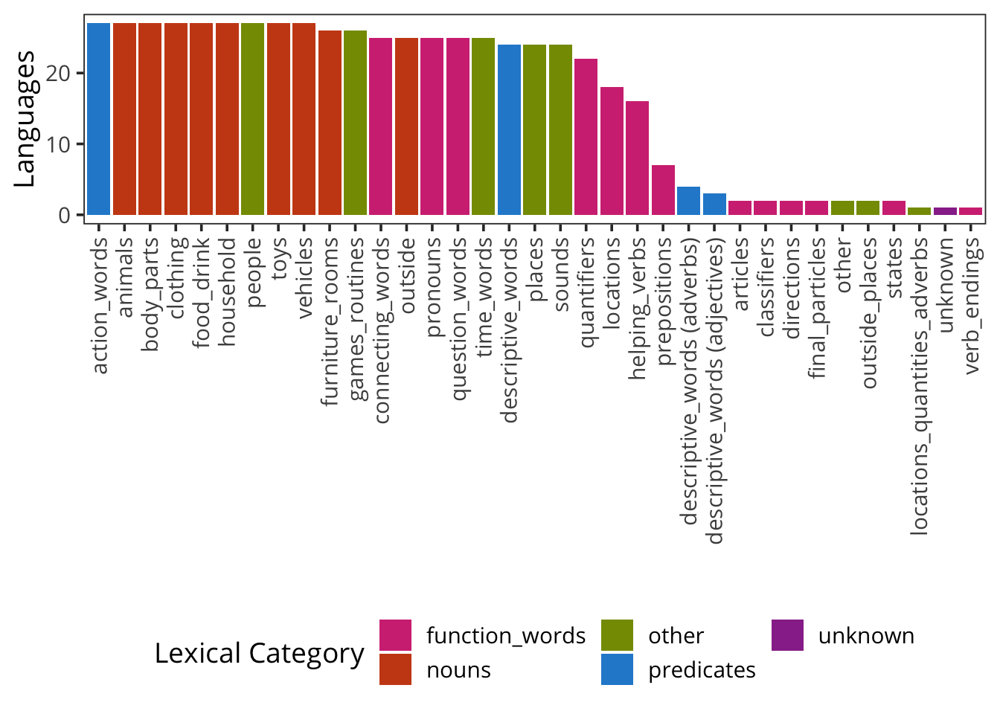
In these analyses, we take advantage of the fact that CDI forms are typically structured into semantic categories (e.g., “animals” or “body parts”). As the figure above shows, while some semantic categories are shared across many instruments, there are others that are quite rare (many corresponding to specific syntactic categories that are of interest in particular languages). We focus on those semantic categories with greater representation in the data. Further, to avoid duplicating our analysis in Chapter 11, we focus on those semantic categories that fall into “nouns” and “other” lexical classes. (In general, “action words” and “descriptive words” tend to be broad predicate classes without as much clear semantic differentiation). This filtering step leaves 14 categories: animals, body_parts, clothing, food_drink, furniture_rooms, games_routines, household, outside, people, places, sounds, time_words, toys, and vehicles. Samples included in this analysis are shown below
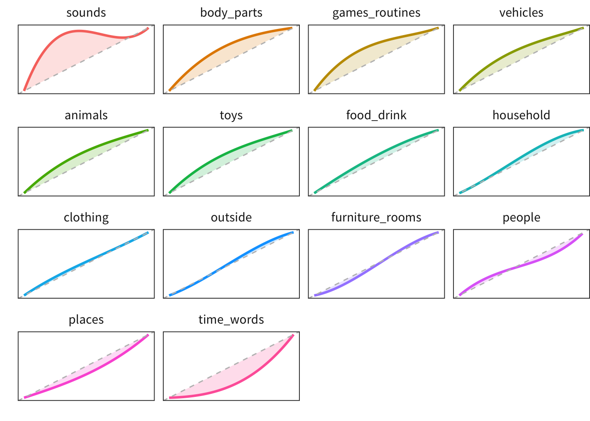
We first illustrate this approach using data from the English WS form alone. Analogous to the plots in 11, the plot above shows areas where the data deviate from the pattern of category acquisition predicted by random item sampling. The size of the shaded region above vs. below the diagonal gives evidence of over- vs. under-sampling for a particular semantic category.
Many of the results of this analysis for English are expected. Sounds items are heavily over-represented, as are Body Parts, Games and Routines, and to a slightly lesser extent, Toys, Animals, and Vehicles. These particular biases are likely related particular parenting practices, cultural emphases (for example, on animal names), and young children’s’ idiosyncratic interests. For a more in-depth examination of the consistencies in very early vocabulary, see Chapter 8; for more detail on what makes particular words easier or harder to learn, see Chapter 10.
The largest under-representation across categories is Time Words. This pattern is consistent with a body of work on children’s acquisition of the semantics of time words that suggests that children struggle with understanding these complex terms through age five (Tillman and Barner 2015; Tillman et al. 2017).
We next turn to how this pattern varies across languages.
12.2 Global Results
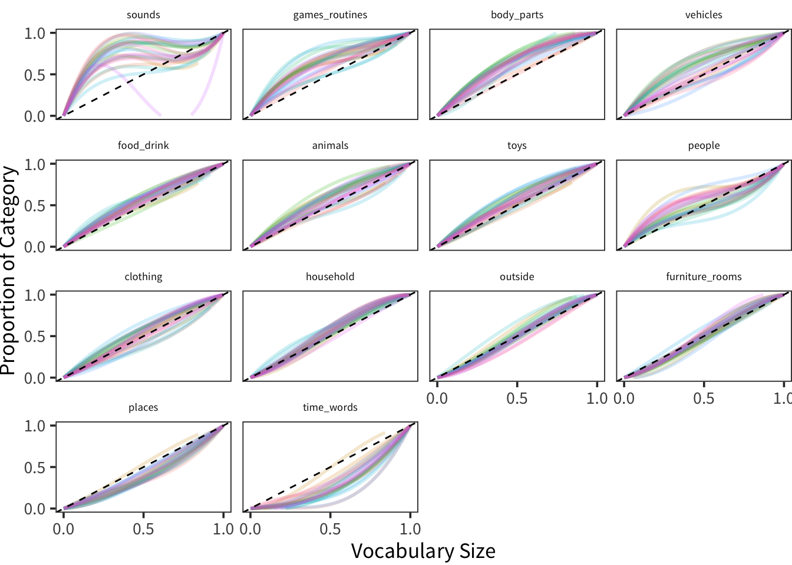
Because there are so many different languages represented in this analysis, the simplest analysis examines the spread of languages across categories. Somewhat surprisingly, the ordering of categories looks quite similar to what was observed in English. Sounds, Games and Routines, and Body parts are all over-represented. Vehicles, Food and Drink, Animals, and Clothing all are variable across cultures, as is People. Household, Outside, and Furniture and Rooms show variability but overall less bias. Finally, Places and Time Word are both under-represented systematically across all languages.
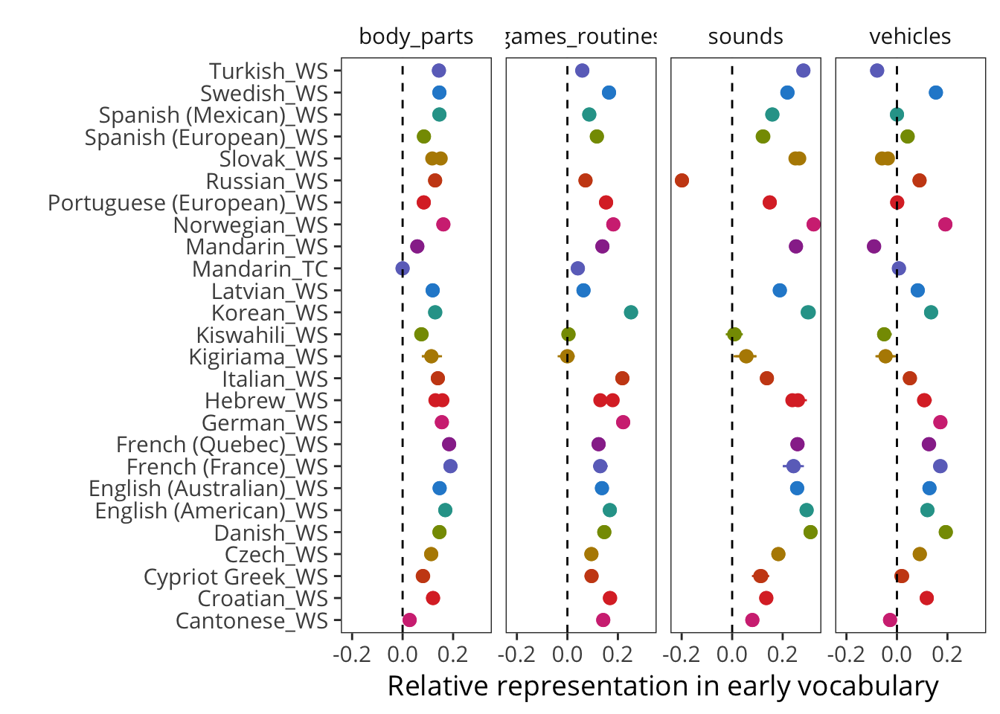
We can zoom in on the most highly over-represented categories. The highest mean comes from body parts, which are over-represented in just about every language. Interestingly, the three datasets with the lowest proportion of body parts are the two Mandarin datasets (WS and TC) and the Cantonese WS data. Games and routines are generally over-represented but somewhat more variable, with Kiswahili, Kigiriama, and Mandarin TC data lowest. Sounds are quite highly variable but almost all positive, with Russian sounds being the outlier. Inspection of these items shows negative developmental trajectories for a number of animal sounds. We believe these data are likely an artifact of parents feeling that they “trade off” with noun labels for animals, and hence should be discounted. Finally, vehicles appear more variable with positive preferences across language families.
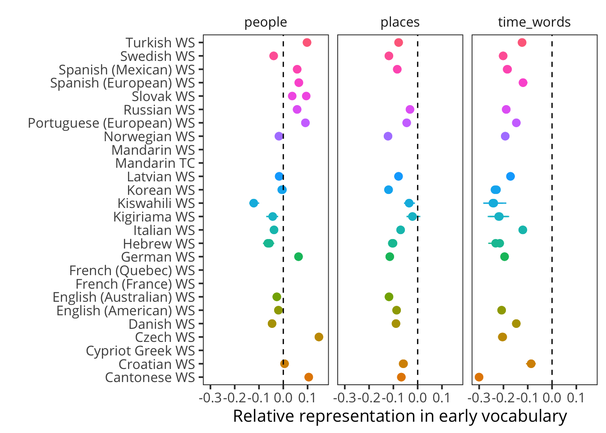 We end by considering people, places, and time words. People is a highly-variable category, with some languages under-representing and others over-representing. Tardif et al. (2008) speculated that names for people were a substantial part of children’s earliest words, but that may reflect that study’s use of Mandarin and Cantonese data where people terms are very over-represented due to cultural emphasis on family connections. Surprisingly, despite the relatively multi-generational and family-centric nature of children’s experience in Kenya (Alcock and Alibhai 2013), people words were relatively under-represented in Kiswahili and Kigiriama.
In contrast to the heterogeneity in people words, words for places and, especially, time words were almost uniformly under-represented in children’s vocabulary. As noted above, time is known to be conceptually difficult for children. Interestingly, though, less has been written about children’s understanding of geographical vocabulary. Time words offer a number of conceptual challenges in terms of mapping an ordered set of durations (second < minute < hour < day, etc.) to a set of concepts that do not map cleanly onto perceptual experience. In some sense, many of the same conceptual difficulties hold true for larger locational/geographical hierarchies (neighborhood < city < state < country). Or alternatively, the under-representation of places in children’s early vocabulary may simply reflect the relative lack of diversity of their experiences with some of the items that traditionally populate this section (e.g., beach, camping, church, circus to name the first four). See Chapter 4 for some evidence that camping especially may be variable in children’s experience.
12.2.1 Dimensionality reduction
Our next analysis of these data takes an exploratory dimensionality-reduction approach. Rather than examining each semantic category individually, we consider the space defined by variation in semantic preferences by running principal components analysis (PCA) on these data. PCA is a dimensionality reduction technique that projects high-dimensional data (e.g., bias by semantic category for each language) into a set of orthogonal dimensions where lower dimensions capture as much of the variance as possible.
Standard PCA requires no missing data, thus we removed languages with missing categories. This analysis thus includes 22 language/form combinations and 13 categories (we exclude sounds because of the issue with Russian sounds and other missing data).
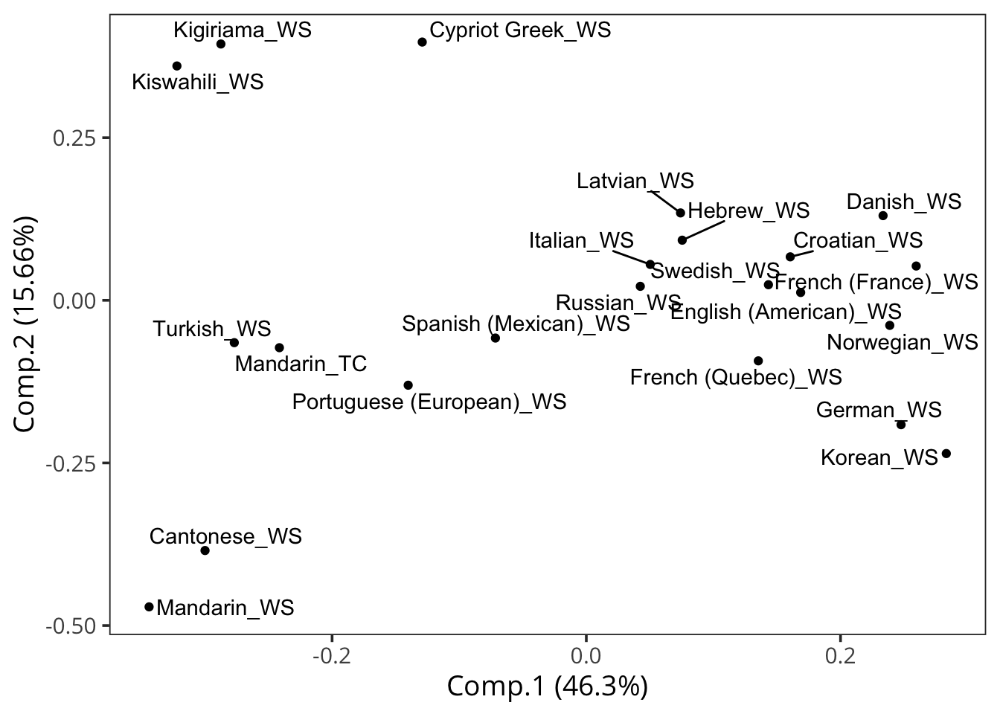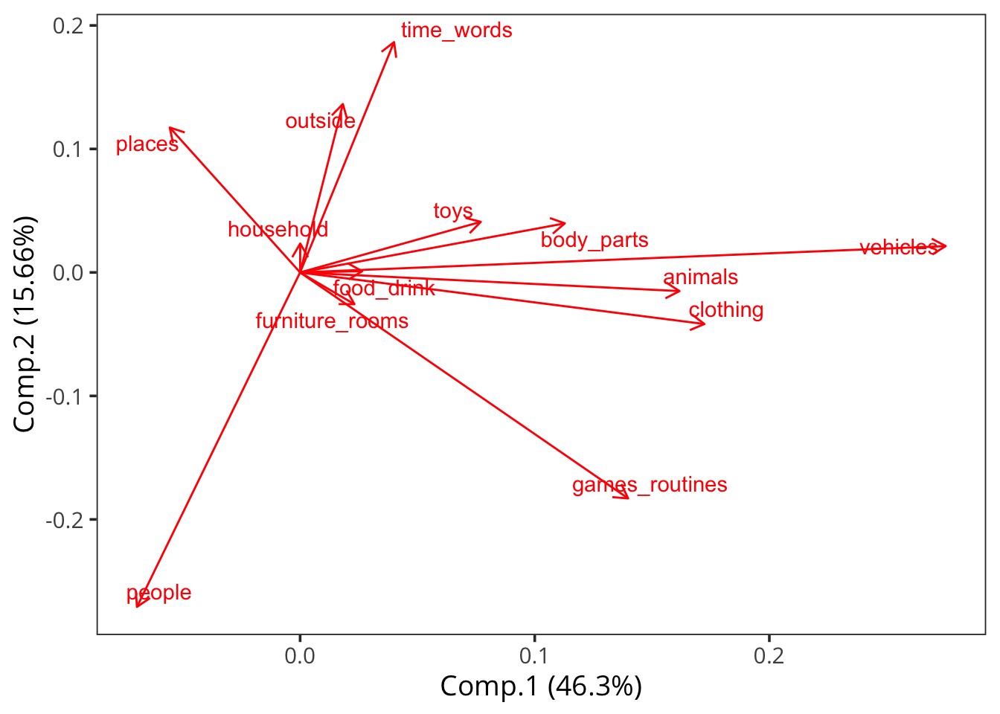
The figures above show the data projected into the space of the first two principal components and the loadings of semantic categories on these two components, respectively.
Several observations emerge: Mandarin and Cantonese WS data are very far towards the direction of people (indicating that these datasets are unusual in this respect). Second, Kiswahili and Kigiriama are especially far in the direction of outside and place words, perhaps consistent with the datasets being collected in rural and semi-rural areas. Many Northern European datasets (as well as Korean) are clustered at the far left, with high scores on vehicles, clothing, animals. Overall, this analysis reveals some interesting structure, but care should be taken not to over-interpret. In particular, within culture differences (e.g., Mandarin TC vs. Mandarin WS) are as large in size as between-culture differences.
12.3 Individual conceptual items
In this section, we isolate individual items from specific domains of interest. Our approach is to use the “universal lemma” mappings (see Chapter 3) to find matching lexical items across languages. The specific domains we consider are time, color, body parts, and logical words. We also investigated spatial prepositions and number words, but do not include them here. Spatial prepositions present a wide variety of mapping issues since lexical items “cut up” space differently across languages (see e.g., Bowerman 1996). And number words are not found on enough CDI forms to have sufficient data for inclusion.
12.3.1 Time
As discussed above, the semantics of time words are very challenging for children through middle childhood (Tillman and Barner 2015; Tillman et al. 2017). Despite this, parents report that children do produce them by age 2.5. The set of words with sufficient translation equivalents for inclusion was day, later, morning, night, now, today, tomorrow, and yesterday.
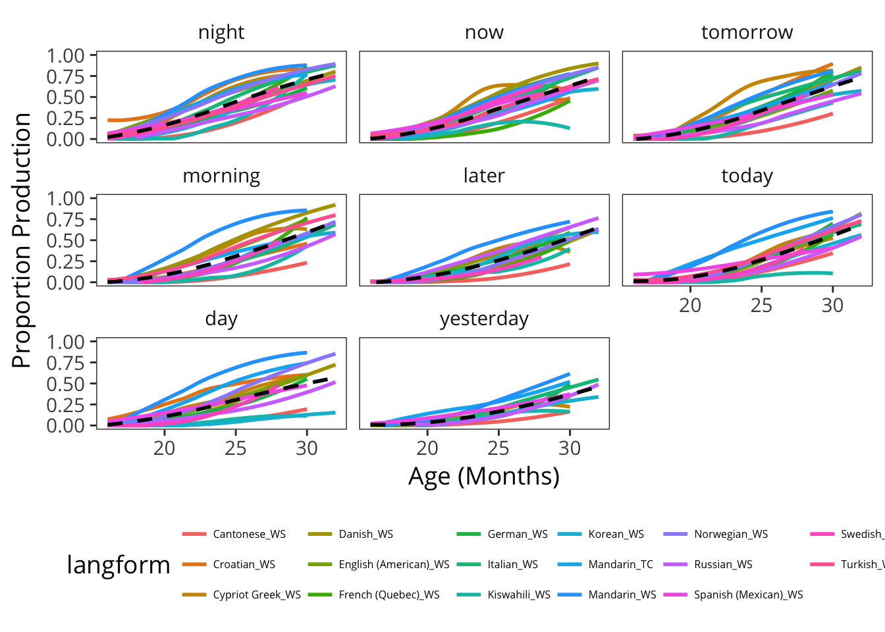
The plot above shows trajectories for these lexical items across languages, sorted by difficulty. Because night is typically signaled by darkness, it is perceptually very concrete and likely easier. Similarly, now seems relatively more straightforward given that it has a common imperative meaning in sentences like “give me that right now.” In contrast, the latest-acquired is yesterday, which is highly abstract and deals with a specific part of the past.
12.3.2 Color
Color word acquisition has been a focus of interest at least since early work by Carey (1978)’s influential study of “fast mapping.” Although early work suggested that color words were learned almost simultaneously (Bartlett 1977), more recent studies have described a more protracted trajectory of partial knowledge. Many children learn some color words and overextend these to cover the rest of color space (Wagner, Dobkins, and Barner 2013). Adding to the complexity of this issue is substantial cohort changes in the age at which colors are learned: while school-aged children struggled with their colors 50-100 years ago, more recently children learn colors in the age range spanned by the CDI forms (Bornstein 1985).
There is tremendous cross-linguistic variation in color vocabulary (Kay et al. 2009). We take advantage of the fact that most of the languages in our dataset have relatively larger color vocabularies, which we can assume means that individual colors probably have relatively similar extensions.22 Despite this, most CDI forms do not include all the basic level color words. The set of color words with sufficient translation equivalents for inclusion was black, blue, green, red, white, and yellow.
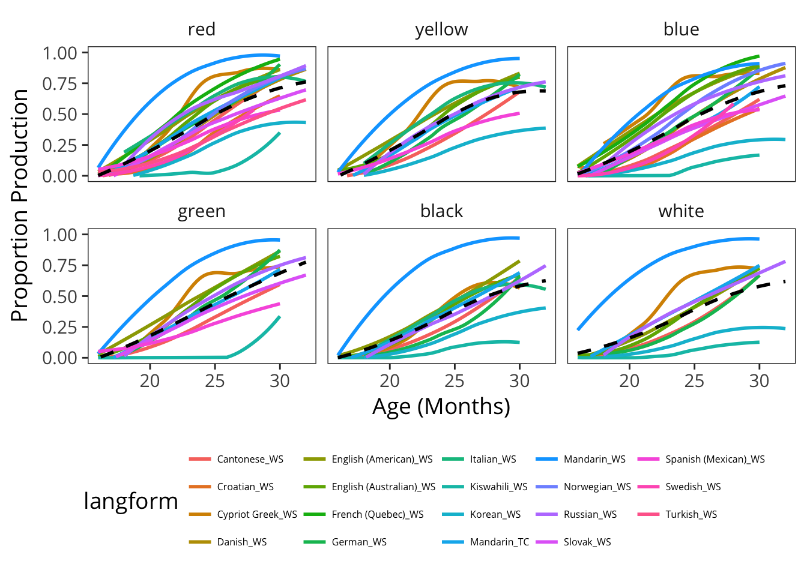
In this set of words, we see that red is typically the first learned, although their is substantial variability in when it is learned. It is followed by yellow, blue, and green, with black and white following behind (consistent with reports by Wagner, Dobkins, and Barner (2013). We additionally see an ordering across languages in which have higher rates of color word production reported.
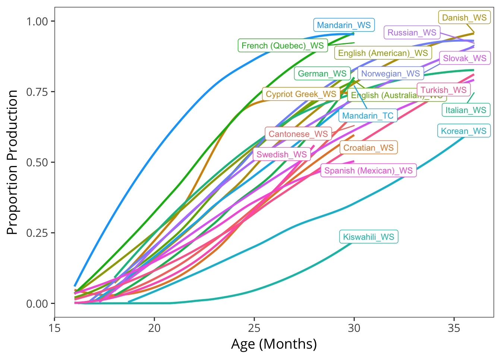
As in other analyses (see Chapter 5), Mandarin WS has the highest level of production. American and Australian English also tend to have high levels of color production. Interestingly, Kiswahili has by far the lowest level of color production, perhaps related to the availability of manufactured toys of contrastive colors (Bornstein 1985).
12.3.3 Body parts
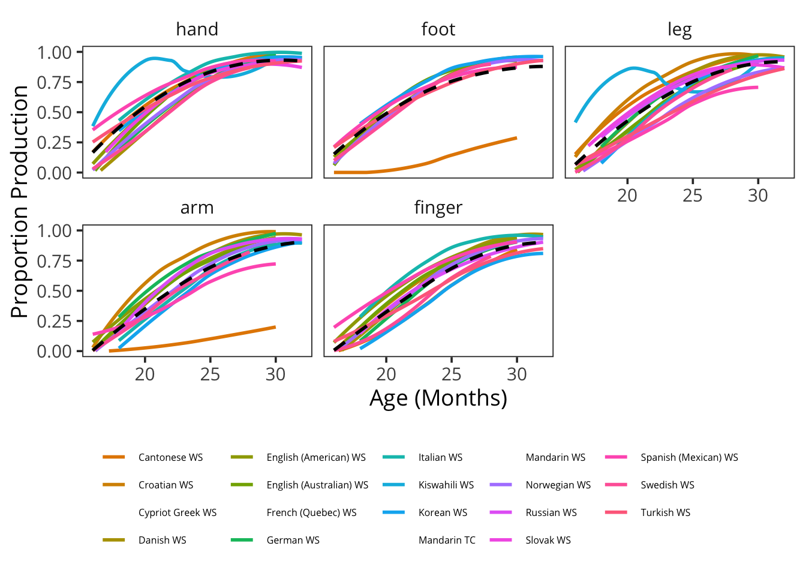
Words for body parts are produced very early by most children, and variance is quite low across languages (with the exception of a few terms in Cantonese and Cypriot Greek). One interesting pattern that is visible in these data is the ordering of hand and foot before leg and arm.
12.3.4 Logic
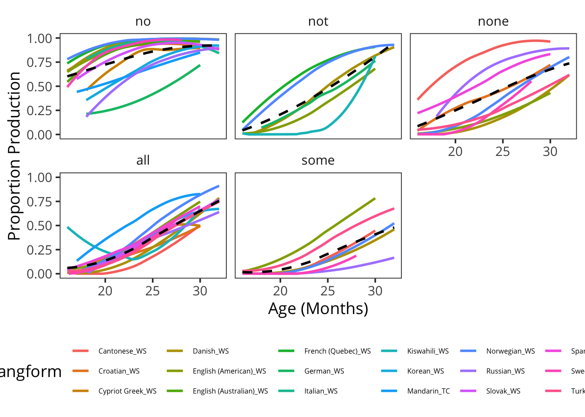
Finally, we examine words for logical operators. The only items that are available across significant samples of languages are all, none, some, no, and not. The negative words are learned early, with an ordering consistent with Bellugi (1967) and Pea (1982). No is very early, and not later. Interestingly, the quantifiers are not ordered as shown by Katsos et al. (2016) in a massive cross-linguistic study. In that study – as well as in our own work in English (Horowitz, Schneider, and Frank 2017) – all was found to be understood better than none. In contrast, here we tend to find none learned earlier than all and definitely learned earlier than some. One possibility is that these uses are only found in a restricted set of cases. Another is that contextualized production of negation is simpler than de-contextualized comprehension, as we have found in some of our work on the comprehension of negation in context (Nordmeyer and Frank 2014, ???).
12.3.5 Category variability
Finally, we quantify the variability across languages for each of these restricted sets of lexical items. For 22-26 month-olds (chosen somewhat arbitrarily to be an age range of high coverage across forms that does not encompass too much developmental change), we compute the coefficient of variation for children at each age on each lexical item. (We first average across ages and then across lexical items; reported Ns are for the average number of contributing languages). We additionally add animal words for the sake of comparison. The table below gives the coefficient of variation for each category.
Body words as well as animal words are highly consistent across languages. In contrast, color, logic words, and time words are far less consistent. These effects are likely somewhat affected by floor and ceiling effects, but inspection of individual items confirms the robustness of the general conclusion.
12.4 Discussion
In these exploratory analyses, we considered representation of different semantic categories across the different languages in our dataset. We found some surprising consistencies. Place words and time words were under-represented, while sounds, games and routines, and body parts were over-represented. These consistencies were also contrasted with some areas of greater variability: for example, the preference for vehicles, clothing, and animals appeared to be a somewhat coherent dimension in our data, with many (northern) European languages higher on this dimension than non-European languages. Still, substantial caution is necessary in interpreting these results as the sample of non-European languages is small. Finally, we found that acquisition of complex conceptual words in categories like color, time, and logical words was highly variable across languages.
Such an assumption would not be warranted if we were considering languages with just a handful of color terms, in which the extension of a term like “red” would be much larger than in English.↩